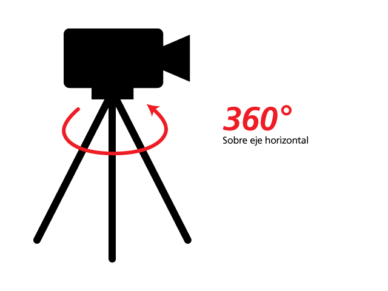
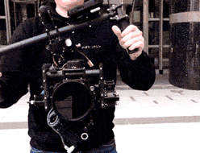
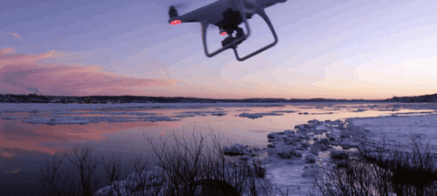

|
|
|
|
|
|
|---|---|
Son movimientos de cámara de un punto A a un punto B, estos movimientos se realizan sin trípode y puede ir cámara en mano, en steady cam los charriots, grúas o vagoneta, si quieres que el movimiento sea perfecto tiene que ir sobre rieles, y su uso son exactamente iguales que los paneos, descriptivo y narrativo, por aportar aportan un poquito más que los paneos ya que están haciendo un seguimiento, su uso es mucho mejor que los paneos.
Movimiento de cámara de un punto A a un punto B en el eje X, sirven para centrar la atención en ele personaje.
Es lo mismo que el horizontal pero nos movemos en el eje Y, normalmente son ángulo frontal natural normal
Sirve para reforzar la atención sobre un punto del plano, y el de retroceso sirve para hacer un cambio de perspectiva o de punto de vista, lo refuerza si se nota que vas andando
Es cuando la cámara rodea a un personaje
Es cuando la cámara gira, hace un movimiento giratorio sobre su mismo eje, tiene que completar el giro.
Hay una deformación en la perspectiva, cambia la perspectiva.
El zoom digital sucede cuando una imagen grabada previamente sin el zoom vamos a provocárselo con el programa de edición
Este sirve para reforzar un mensaje que queramos transmitir
Ha surgido en la nueva era digital, se hace para estabilizar una imagen movida en un software de edición
Se ha utilizado de siempre la cámara en mano a parte del trípode, son los dos movimientos más utilizados, la imagen se puede decir que no está limpia, se va a notar que estamos andando pero le da más realismo y MUCHA MÁS LIBERTAD ejemplo en un plano subjetivo.
Son aquellos que usan un aparato estabilizador, sigue siendo un movimiento libre como cámara en mano, pero añade la estabilización a la cámara que no se va a notar cuando andemos, dependiendo del dinero va a ser mejor o peor.
Son todos aquellos movimientos realizados con este tipo de máquinas, con los drones, vienen derivados de tecnología militar, y sobre todo da mucha altura, se utiliza para accidentes geográficos, para control demográfico, arquitectura, manifestaciones, arqueología.
Es un giro de movimiento que sirve para sorprender y la cámara gira 180º, lo que está viendo realmente está al revés, es un giro de 180º en el eje.

 back
back next
next home
home